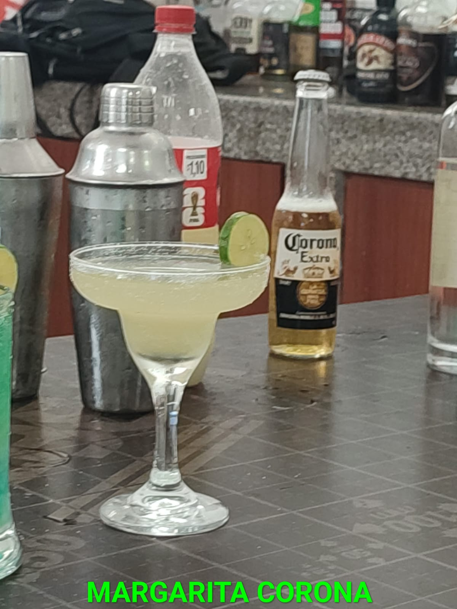
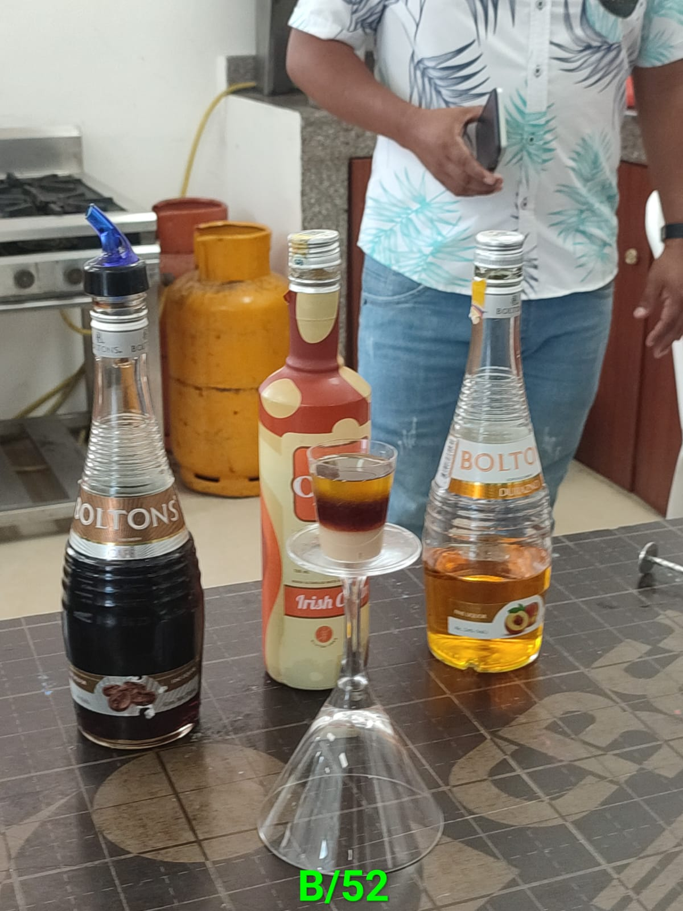
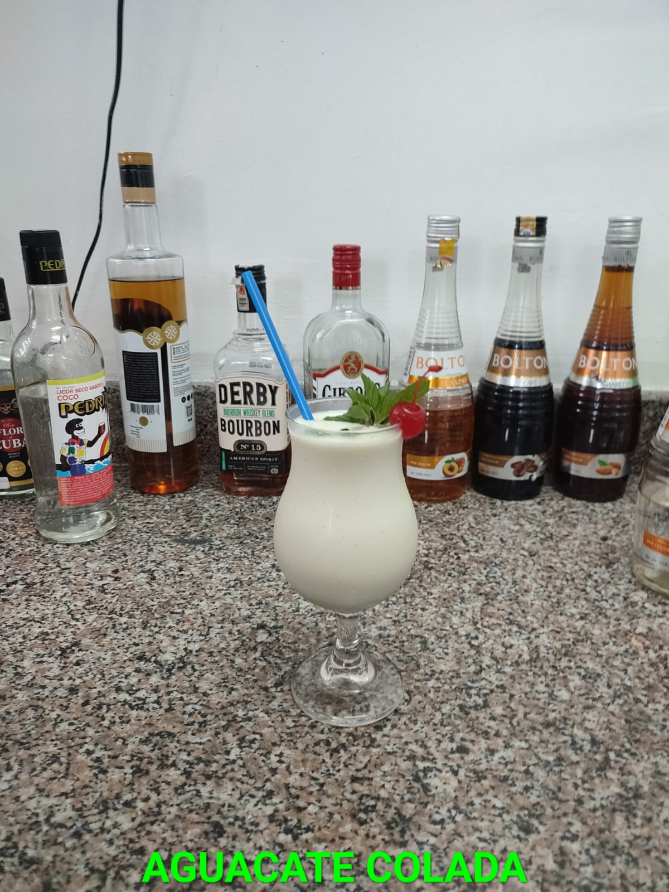

Contexto
¿Que hice y por que?
Realize un curso de Cocteleria proporcionado por el Ministerio, Este curso lo culmine el 12 de octubre, en la que inicio aproximadamente en Agosto. Este curso lo decidi tomar ya que me gusta todo lo que tenga que ver con la cocina, y ver mucho anime en la cual unos que me gustaron y me dio la ganas de aprender a como hacer, que sabe, en la cual se me dio la oportunidad en tomarla. Con el profesor Victor Hugo Lopez en la cual nos repetia siempre que podia que en todo el Ecuador el era uno de los Barman con estrella michelin en la cual si ha enseñado bien y he aprendido.
Materiales y factores
- Los marteriales en la cual se usan seria los tragos fuertes como:
- Wisky
- Ron
- Gin>
- ect
- Otros de los materiales en la cual se emplean para la realizacion de los cocteles son licores/cremas(Son licores a base de concreto):
- Licor de Coco
- Licor de Menta
- Licor de cherry>
- Licor de Cacao
Otros.
- Y por ultimos Materiales que sirven para darle sabor y color elegantes a los cocteles:
- Granadiana
- Cremas
- Sal>
- Jugos
Otros
- Unos de los factores en la cual no pude centrarme en el curso ha sido por el trabajo que me llevaban de viaje lejos y en los dias que tenia el curso.
El arte de ser barman es un oficio antiguo y honorable. No es una profesión
Desarrollo
Dia del Curso
- Todos los sabados depertaba temprano para alistarme la para las clase ya que ir sin desayunar puede afectar al momento de captar los cocteles y salir temprano ya que nos pedian puntualidad
- Para llegar al curso se tenia tenia que Coger metro y quedarme en una estacion cerca para caminar hasta las intalaciones.
- Al finalizar el curso me regresaba a casa un poco mariado por probar los cocteles en la cual llegaba y me quedaba dormido o me sentaba el la PC a jugar hasta la hora de irme a dormir para al dia siguente ir a trabajar
Datos
| Actividad | Duración | Observacion |
|---|---|---|
| Inicio | 3 horas | El profesor se presento y nos explico que vamos hacer y cuanto durara este curso |
| Copas | 2 horas | Nos explico para que sirve cada copa y como/porque fue creada y que cocteles se sirven en cada copa |
| Degustacion | 3 horas | La manera correcta de probar un cocteler es mediante sorbos y tenerlo en la boca como si fuera enjuage bucal |
| Prepraracion | 3 horas | Hay diferente formas de preparar y presentar los cocteles |
Evidencia



Recurso Relacionado
Aprendizajes
Lo que aprendí
Aprendi que la profecion de Barman no solo es preparar cocteles es mucho mas ya que uno de los puntos importantes es al momento de servir hacer que el expectador quede encantado con lo que hacemos y le guste que lo que le preparamos.
Qué mejoraría
Practicaria mas en la prepacion de los cocteles y en aprender muchas mas preparaciones, mejorar el la utilizacion de los instrumento de Cocteleria